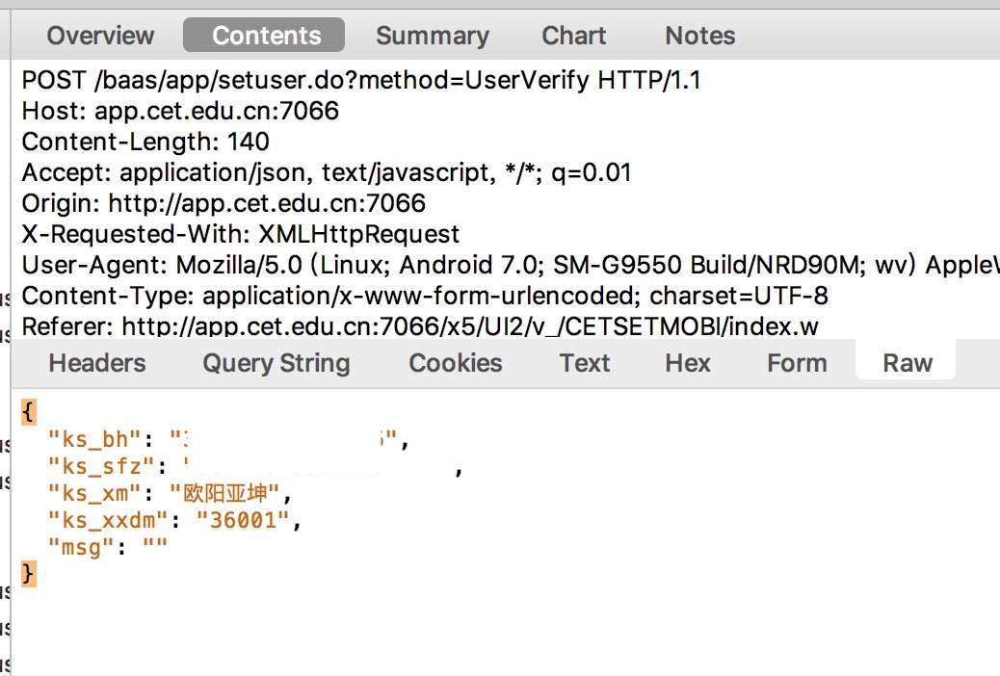
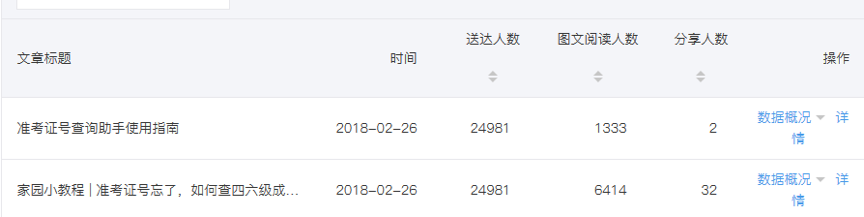
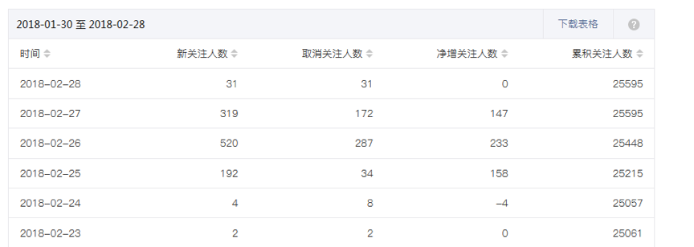
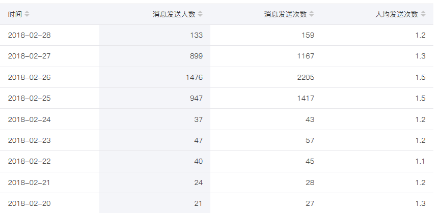

我们在2018年2月推出了四六级一键查询功能，因发现CET官方提前出分，便提前推出查分功能，在校内外引起轰动。
2018年2月23日深夜，我发现一家可以通过身份证号查询四六级准考证号的网站，便将其发在了研发群里，并对其产生兴趣，想找到背后的接口，针对我们学校开发一款查询准考证号的工具，为大家带来便利，同时也可以达到推广APP的目的。罗经宇看见我在群里发出的网站后，私聊我并提出了类似的想法，我们一拍而合。
一开始我歪打正着找到了正确的方法：https://www.jianshu.com/p/0d33ef679332，发现其本质只是构造了一个POST表单。于是大喜过望，可是经实践后发现返回值却一直是{"msg":"您输入的信息有误,或者你不具备口语考试的资格,请认真检查你输入的信息是否正确!"}。于是便怀疑接口已被封闭，开始寻找其他方法。在其他方法均尝试无果后，我回到一开始寻找的接口，通过其域名发现这个后端应该是为CET官方应用提供的，因此便下载了官方APP开始抓包分析，返回了真实结果。然后经过排除对比发现了缺失的项目：Content-Type: application/x-www-form-urlencoded; charset=UTF-8

我将结果告诉了罗经宇，我们又想到可以结合云家园用户数据中的姓名和身份证号，做一个一键查询四六级成绩的工具，这样对用户来说无疑会更加方便，想法成型后我们便商量第二天开工。
遇到的问题 & 不足：当时遇到的是如果找不到查询接口的话，这个项目可能没法做下去的问题，因此比较急，失去了方向，导致浪费了很多时间。
寻找接口的部分结束了，可是这个组建团队的过程让我想到在《程序员修炼之道》看到的石头汤的故事：
在有些情况下，你也许确切地知道需要做什么，以及怎样去做。整个系统就在你的眼前，你知道它是对的。但请求许可去处理整个事情，你会遇到拖延和漠然。大家要设立委员会，预算需要批准，事情会变得复杂化。每个人都会护卫他们自己的资源。有时候，这叫做“启动杂役”（start-up fatigue）。
这正是拿出石头的时候。设计出你可以合理要求的东西，好好开发它。一旦完成,就拿给大家看，让他们大吃一惊。然后说：“要是我们增加……可能就会更好。”假装那并不重要。坐回椅子上，等着他们开始要你增加你本来就想要的功能。人们发现，参与正在发生的成功要更容易。让他们瞥见未来，你就能让他们聚集在你周围。
—— 《程序员修炼之道》 P7
现在的家园存在一个问题，便是团队组建困难。只能通过上级指定人员，通过强行分组的方式将大家集合在一个组里，导致最后出来的结果不遂人愿。
我想提倡的是，以后大家有了新的想法，不要着急去组建团队，而是要根据自己的能力，将自己能做到的东西做出来，然后拿给大家看，通过兴趣组建团队。正如书中所说：参与正在发生的成功要更容易。同时大家看到自己感兴趣的项目也不要畏首畏尾，担心自己的能力不足，勇敢参与才会有提升。
这个部分包括了产品设计和UI设计，既然要推广APP，我们想到了可以利用APP的用户信息，调用现有的查询接口，免去登录的步骤，也作为主打功能之一。
当然作为一个工具，我们也提供了用户名登录接口，这个在实际上线时取消了，暂且不表。
在产品设计方面，我考虑到一定要让用户的使用流程尽量通畅，查询过程中不要有任何的东西来打扰用户的体验。
可就在这时，罗经宇通知我四六级查询会出现验证码需要用户输入…我第一时间想到了识别验证码，可是时间紧急，我便没有提，便在设计稿里加入输入验证码的部分，并为了避免打断用户的体验，以叠层的方式加在了成绩块上方。
设计稿中的插画部分，因为时间紧急，加上考虑到在查成绩这样一个紧急的时刻又有谁会在意设计呢 😂？因此满足功能的需求此刻大于设计需要， 于是就在网上找了素材，结合到设计里，最终在24日晚完成了设计稿。
遇到的问题 & 不足：遇到了出现验证码的问题，算是通过融入体验流程中，解决的比较妥当。不足主要还是在首页设计太过简单，不够生动。
不得不说，因为是自己做的图，前端的过程真是顺畅多了…
前端开发面临的第一步便是技术选型。我毫无迟疑地选择了自己最熟悉的：React + axios，在24日深夜完成了 UI 的实现。
在 UI 实现的过程中，我的大部分素材图都是 SVG 格式导出，这样能大大地减小图像资源的体积，并减小适配难度。但是需要注意的是，涉及到阴影或是高斯模糊的效果，svg是没法实现的，因此 AI 选择了内置 base64 将 PNG 图像硬编码进 SVG 文件当中，因此以后的素材如果涉及到了这些效果，可以考虑直接导出 PNG，这样更有利于后期的优化。
因为项目页面是在手机上的页面，因此我在适配过程中，全局使用了 vw 和 vh 作为单位。这在适配过程中是比较省心的一种方式。
因为首页有一个按钮需要对齐页面底部，因此我一开始直接使用了绝对定位。一开始在 Chrome 手机模拟器上效果还不错，可在手机上测试时发现按钮直接被顶出了页面，思考后认为是浏览器顶部导航栏也在页面流中所引起的问题。这个暂未找到解决方案，最后直接 padding-top 了。
在APP上还有一个坑，就是在输入法会挡住输入框，我推测是 React Native 的 Webview 没有在输入框弹出来时减小 viewport 的高度并且自动滚动到输入框。因此我用了一些邪恶的方式来适配……
function getTop(e) { var offset = e.offsetTop; if(e.offsetParent != null) offset += getTop(e.offsetParent); return offset;}document.body.addEventListener("focus", function(e) { var focusElem = e.target; if(window.appReady && e.target.tagName == 'INPUT') { var posY = getTop(focusElem) - 80; var oldMargin = document.body.style.marginBottom; var oldTop = document.body.scrollTop; document.body.style.marginBottom = posY + 'px'; document.body.scrollTop = posY; focusElem.addEventListener('blur', function(e) { document.body.style.marginBottom = oldMargin; document.body.scrollTop = oldTop; }) }}, true);原理基本上就是在 focus 的时候滚动到输入框的相对定位。为了防止滚动空间不足，还添加了 marginBottom。
因为 ant-design-mobile 引入了一个 fastclick 插件，可是在实际使用中发现会导致 input 元素难以 focus，于是便去掉了 fastclick 之后恢复了正常。实际随着现代浏览器的更新，如果 viewport 中使用了user-scalable=no，便不会有 300ms 的延迟，也不必引用这个插件了。
一开始我是面向后端开发，可是之后便面临着罗经宇先发文档后部署的境况… 于是决定要根据文档来搭 mock server 了。开始使用的是 postman 自带的 mock，结果一天只有 1000 次… 这调试一上午就用完了。于是开始寻求出路，最后选择了 nodejs + express。
前端开发完成，将 mock server 切换成真正的后端，输入验证码之后令人惊奇的一幕发生了：我的六级成绩展示了出来。
之后便进入了一段奇幻的旅程…，详见运营篇。
官方将在2月27日公布四六级成绩。
2月24日凌晨时和欧阳亚坤讨论四六级准考证号查询或进一步发展为四六级一键查询的可能性及难点。24日中午正式决定开始开展项目，下午后端主要代码完成，当日晚后端完成准考证号的缓存。
25日下午四点左右前端发现已可查询成绩，项目组三人进行了深入的交流。25日晚前端完成后将产品链接发入大群，学长学姐介入，并立即决定当晚发布产品。
26日九点左右成绩又不可提前查询。
27日九点成绩正式公布，几分钟后端崩溃，直到一个半小时后才恢复。27日下午cet官方准考证号查询api不可用。
共有三个api。
查询准考证号的api将先尝试从缓存取出准考证号，如果没有则用爬虫获取准考证号，然后存入数据库，获取准考证号后再尝试用准考证号和数据库的身份证号从不需要验证码的学信网获取成绩，如果成功则将获取数据返回，失败则返回准考证号和姓名。
另外两个api一个是获取中国教育考试网的验证码，另一个是以用户输入的验证码去获取成绩。
程序设计时考虑到学信网非常容易崩，且到时候会有一定的改版，便在学信网爬虫部分使用了很多try，并且在服务器上根据实际情况修改请求的timeout，避免很多用户长时间的阻塞在这，从而占用过多线程数导致服务不可用。
为保证可用性，准备了两个爬虫，在查询准考证号的api里如果学信网不可用则只返回准考证号和姓名，接着使用中国教育考试网的爬虫来获取成绩。
为避免到时候cet官方准考证号查询接口不可用，提前缓存了所有大二大三的准考证号，使主体用户在情况最糟糕的情况下都能使用核心功能（此时大一还没考四六级）。
25日发现成绩能提前查询时，在服务器上直接将查询准考证号api里使用学信网爬虫的代码删掉，避免在这里无意义的浪费时间（当时学信网还不可用）。
27日临近九点时使用git checkout --恢复代码，并将学信网请求部分的timeout设为2秒，几分钟内服务可用。随后学信网开始以一定概率爆出验证码，服务开始不可用，但以后端代码的设计逻辑来讲，服务并不会因此崩溃，所以当时的猜测是因为中国教育考试网太过拥挤或我们服务器的ip已被ban掉，进行curl和wget后确认没有被ban，丢包率也确实非常高，再加上后端的监控系统没有报与timeout相关以外的错误，便没有怀疑是代码本身有问题，而将目光放在了丢包上。于是当时直接在服务器上，提高中国教育考试网的爬虫的请求数，如果单次调用爬虫，发出5次网络请求都还没有成功才会返回。但随后发现服务依然不可用，便开始感到焦虑。本地进行了一些测试后发现这部分代码效果提升不明显，便gitcheckout --恢复了这部分代码。
开始将目光放到学信网上，研究了当时学信网页面的逻辑，再次确认从代码上讲爬虫无论如何都会返回布尔值为false的值或成绩。此时离公布成绩的时间已经过去了快一个半小时，心态已经非常焦急，便抱着试试的心态又将使用学信网爬虫的几行代码删掉，随后发现服务可用。
当时非常不解为什么那几行代码会出问题，本地跑了后端部分后，用postman测试并没有出现问题，学信网的爬虫也确实返回了一个布尔值为false的值，而docker+virtualenv一般也不会因为环境问题使服务不可用。当时也没有考虑使用log在生产环境调试，不过现在觉得应该做一下看看到底发生了什么。
现在看来当时有很明显的证据证明问题出在哪——准考证号没有返回，那就说明查询准考证号的api出了问题，而自己的准考证号又已经缓存，检查过redis后便只可能是学信网的爬虫部分出了问题。
而这部分当初设计时是觉得无论如何都要返回的，所以便在觉得可能出问题的地方使用了try。可如果要保证服务的可用性，又不确定爬虫到时会出如何的错误，建议在调用爬虫的外面加一层try，这样即使这个爬虫出了你完全没有预想到的错误，也不会影响服务的可用性。
① 出问题时首先明确哪出了问题，像这次就很明显是查询准号api不可用，首先应看到并修复它，再考虑之后别的api丢包的问题。
② 在出成绩的时候爬虫普遍都会阻塞很久甚至失败，这时候应该首先保证服务的可用性，比起长时间的网络请求，try的性能牺牲并不大，而如果不是百分百确定哪会出问题，则可以在调用爬虫时套层try。
① 结果数据分析：
上线当天及之后的二次推广效果显著，说说阅读量均超过日常平均阅读量，相关推文也创下了最高阅读量。

② 效果数据分析：
（1）产品推出后，APP用户量以及打开次数有了显著提升；
（2）微信粉丝数量增长迅速，后台消息互动留言增多；


（3）QQ请求添加的好友增多，后台留言互动及说说评论多次出现正面评价；
（4）由于产品本身的特性（提前2天查询四六级成绩），在校内外都引起了一定的反响，也提升了家园工作室的知名度。
① 由于CET后台数据库的漏洞，四六级助手超前获取了四六级成绩数据。但是对于成绩的来源并不好解释，如果宣传不当还容易落人口舌，引起公关危机以及用户对家园的不信任，影响家园的声誉。于是在上线宣传的时候，选择不利用家园官方账号公布可获取成绩的功能，而是宣传可获取准考证号的功能，让用户及家园人在班群、评论或转发说说提到可查询成绩的功能。利用用户自传播，在引起大范围的传播和讨论的同时，强调了成绩的获取，弱化了用户对成绩来源渠道的关注，从而避免解释数据来源，也避免了一系列可能因解释数据来源而导致的问题；
② 由于发现可查询成绩的时间（25日下午）早于原定的上线时间（26日晚），决定提前上线以获得更多的宣传、使用时间和热度。事实证明提前上线的决定是正确的，因为26日上午，此漏洞就已被发现并修复。如果没有提早上线，这一波产品爆点就无法被引爆，带来的正面效应也会大幅度降低。
① 在决定25日晚上线之后，因为当天是周日，与家园公众号固定栏目“一周互联网大事件”相撞，且当时宣传推文并未完成，便决定把推文延后一天发布。然而当晚九点半左右，推文就已经完成，处于可发布状态，且可以与互联网大事件作为一二级推文一同发布。作为产品上线一天后发布的推文，由于对成绩查询的过度敏感，过于强调查询准考证号的功能，而忽略了宣传在27日成绩发布后也可以通过四六级助手查询成绩的功能。微信宣传推文是一大失误。
② 由于准备时间不够充足，在想法提出（24日）的第二天便上线宣传，因此前期目标设立不明确，没有总体规划，也是一个遗憾和不足。
综上，虽在微信推广中有所失误，但此次四六级助手的上线宣传总体来说取得了成功。希望今后能够对此次的失误点有所规避，进行影响力更大、正面效应更多的宣传推广。